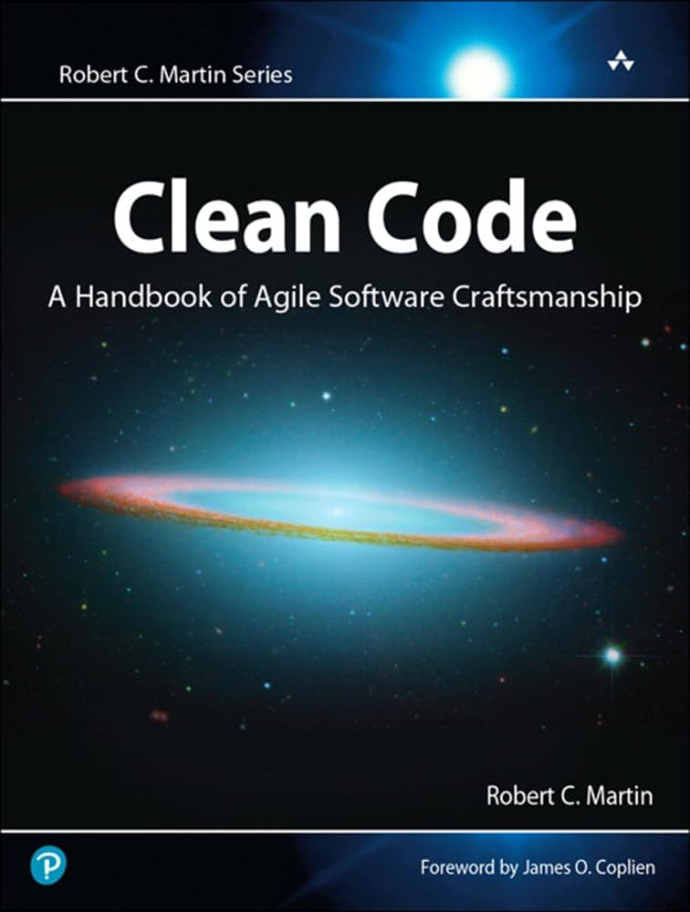
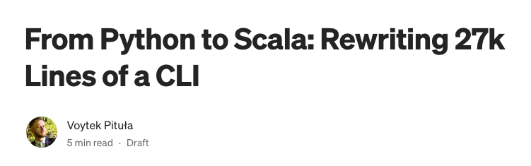

## Creative Engineering
---
#### The Subtle Art of Cutting Corners
Voytek Pituła
----
### ⚠️ Warning ⚠️
The techniques discussed in this talk are for demonstration purposes only and
were performed by trained professionals.
Attempting them at work may lead to unexpected results, including, but not limited to
systems failure, severe frustration, a job promotion or permanent banishment from the industry — none of which we can be held liable for.
----
Creative Engineering
### We learn things

++++
### So we can ignore them
++++
### Why this talk?
To brag!
To spark creativity!
++++
## Why is it important?
++++
Creative Engineering » Why is it important?
### Reason 1
Product development is about learning as much as possible as fast as possible.
++++
## Reason 2
> Impossible doesn’t exist in software development—when the product asks, we ask by when you need it.
----
Creative Engineering
## Remote Code Execution
üò±üò±üò±
++++
Creative Engineering » Remote code execution
### A tale of a Config
- Config
- Config has to be shared between services
- We don't want a SPOF
- So we send config over kafka
- But we want to personalize config
- So we send also personalization logic! (Jsonnet)
%%{init: {'theme': 'dark', 'themeVariables': { 'darkMode': false }}}%%
flowchart LR
A[Client]
B[Config Service]
C[Service A]
D[Service B]
E[Kafka topic]
A --"manages config"--> B
B --config + jsonnet logic--> E
E --> C
E --> D
++++
### Java Stored Procedures
----
Creative Engineering
### Let's talk about
## ETLs
++++
Creative Engineering » ETLs
### How to transform data?
spark, airflow, dbt, kafka connect...
++++
### Streaming has costs
- rewinding
- backpressure
- disconnects
++++
### Batch processing has costs
- storage
- triggering
- latency
++++
## SQL Views
## to the rescue!
++++
##### SQL Views to the rescue!
```sql
--- standard migration
create table source_1 (data jsonb);
--- repeatable migration
drop view if exists viev_a;
create view view_a as select data ->> "my_field" from source_1;
```
++++
##### SQL Views to the rescue!
```mermaid
%%{init: {'theme': 'dark', 'themeVariables': { 'darkMode': false }}}%%
flowchart LR
A[Datasource A]
B[Datasource B]
C[Viev A]
D[View B]
E[View C]
F[View D]
G[Result View]
H[Datasource C]
A --> C
A --> D
H --> D
B --> E
B --> F
C --> E
C --> F
E --> G
F --> G
D --> G
```
++++
Creative Engineering » ETLs » SQL Views
### But Why?
- Simple
- Immediate
- Easy to modify
- Easy to test
- Easy to debug
- Slow?
++++
##### Example 1
#### Security Cases @ Sony Electronics
```mermaid
%%{init: {'theme': 'dark', 'themeVariables': { 'darkMode': false }}}%%
flowchart LR
A[Splunk]
B[Jira]
C[McAfee]
D[...]
E[System]
F[Security Backlog]
A --> E
B --> E
C --> E
D --> E
E --> F
```
++++
##### Example 2
#### Books Reading Summary @ Home
```mermaid
%%{init: {'theme': 'dark', 'themeVariables': { 'darkMode': false }}}%%
flowchart LR
A[Audible Library]
B[Obsidian Reviews]
C[Openlibrary]
E[System]
F[Reading Summary]
A --> E
B --> E
C --> E
E --> F
```
----
Creative Engineering
### How many DBs do you need?
One?
Two?
A few?
++++
All Of Them !!!
++++
Creative Engineering » How many DBs?
Extreme Sharding
#### When single db is not enough
link
`SQLite`s in shared volume, archived to S3.
[business4/workflows4s](https://business4s.org/workflows4s/)
----
Creative Engineering
### Never expose DB to your fronted!
++++
Creative Engineering » Never expose DB to Frontend
Or maybe do?
Generates GraphQL from PostgreSQL with a bit of configuration.
++++
#### You don't have to expose your main database!
### Create a dedicate one
++++
##### Oh, and btw
### How do you expose XML to the fronted?
Through a database, of course.
++++
## Showing DMN
```mermaid
%%{init: {'theme': 'dark', 'themeVariables': { 'darkMode': false }}}%%
flowchart LR
A[Service]
B[Backoffice Gateway]
C[Backoffice UI]
A --grpc--> B
B --rest--> C
```
vs.
```mermaid
%%{init: {'theme': 'dark', 'themeVariables': { 'darkMode': false }}}%%
flowchart LR
A[Service]
B[Database]
C[Hasura]
D[Backoffice UI]
A --> B
B --> C
C --> D
```
----
Creative Engineering
# APIs
++++
Creative Engineering » APIs
Payments processing
You need to do bank lookup
Find name of the bank based on IBAN.
%%{init: {'theme': 'dark', 'themeVariables': { 'darkMode': false }}}%%
flowchart LR
A[Service]
B[Provider for jurisdiction A]
C[Provider for jurisdiction B]
A --"just lookup"--> B
B --> A
A --> C
++++
### Consuming Solana API
A tale of myriad ways
notes:
Its binary, with a lot of bytes manipulation.
It has SDK for Typescript and Rust but our system is in Scala.
++++
Creative Engineering » APIs » Solana
#### The Myriad ways
- json-rpc in Scala
- interact with Rust via JNI
- expose RPC from Rust
- use JS through Rhino/Graal
- use JS through node subprocess
- ☝️ with TS or Scala.js
- use Java lib (solanaj) or Kotlin (sol4k)
- do it via TS/Rust/Scala.js as a sidecar (dedicated local subpcomponent)
----
Creative Engineering
### Speaking of options
link
JVM vs JS vs native vs graal
lambda vs service
++++
#### One word about scala.js
Can a niche transpiled language make sense?
We've built a Hipchat plugin
Hipchat died before we've hit any issues
++++
### What about a CLI
Can you do command line tools with a JVM?

link
----
#### Creative things to we do with
## Logs
++++
Creative Engineering » Logs
## Log based alerting
```mermaid
%%{init: {'theme': 'dark', 'themeVariables': { 'darkMode': false }}}%%
flowchart LR
A[App]
B[Elastic]
C[Elastalert]
D[OpsGenie]
A --> B
B --> C
C --> D
```
++++
## Log based analytics
Maybe you don't need Redshift?
++++
## Log based
## machine-learning
Maybe you don't need another dataset?
----
Creative Engineering
## Can you see a pattern?
++++
# Questioning Assumptions
++++
#### Assumptions
- Sending code over the wire is not a good idea
- You need "proper ETL"
- SQL views are slow
- You need one logical database per system
- Exposing database to the fronted is not a good idea
- XML should be shared over dedicated API
- You have to use API only as author intended it
- The only way to consume API is through SDK
- Niche languages don't make sense
- JVM is too slow for a CLI
- Logs are only for monitoring
----
Creative Engineering
# Be Creative !
---
Thank you!
Voytek Pituła @ SwissBorg
[https://w.pitula.me/presentations](https://w.pitula.me/presentations)